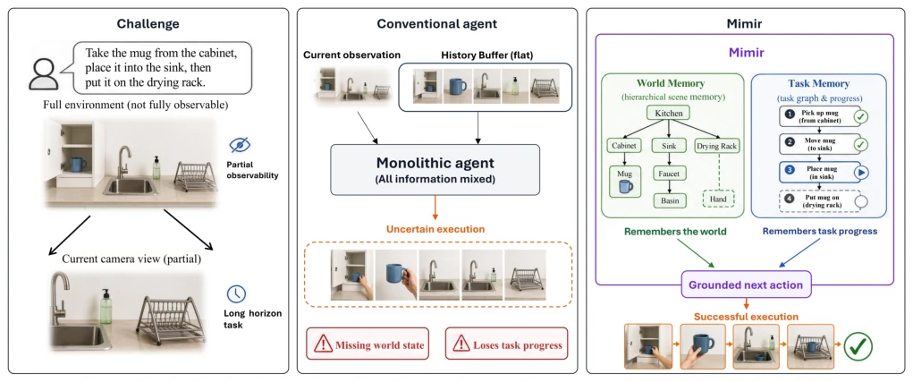
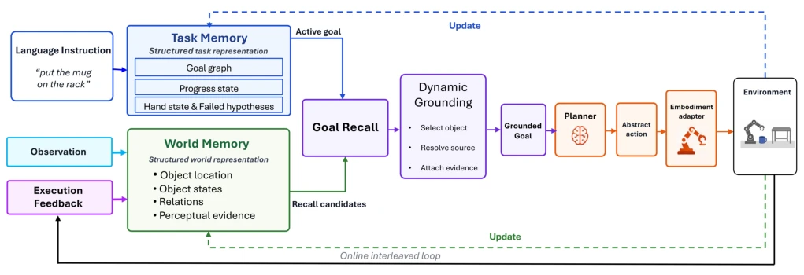
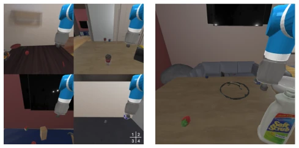

This paper on Mimir can be considered a potent remedy for the 'amnesia' of embodied intelligence. It does not pursue flashy end-to-end black boxes, but clearly separates 'where the world is' and 'where the task is', implementing a neuro-symbolic dual system. The most notable feature is the 'Dynamic Grounding', which forcibly aligns abstract instructions with specific objects before each action, preventing the model from 'taking things for granted'. Experimental data is indeed impressive, elevating small models to the level of closed-source large models or even surpassing them on long-horizon tasks, proving that structured memory is superior to simply stacking parameters. However, there are also points of contention: the system still relies heavily on perceptual input; once visual evidence is missing or the environment configuration is absurd (such as in Figure 3), it cannot generate information from nothing, after all, it only organizes memory, not a prophet. Additionally, although this explicit state management is stable, the computational overhead and engineering complexity are estimated to be significant; whether all scenarios are worth such effort remains questionable.
研究动机Motivation
长程具身操作的核心痛点在于部分可观测性（Partial Observability）下的状态维持。现有的方法往往依赖扁平的历史记录（Flat histories）或隐式的策略状态，这导致 agent 虽然“记得”看过什么，却无法明确判断哪些世界事实支持当前目标（Abstract）。例如，LLM-State (Chen, Xiao, and Hsu 2023) 虽然追踪了物体属性，但任务进度是隐式的；CAPEAM (Kim et al. 2023) 记录了动作上下文，却缺乏将回忆证据与活跃目标绑定的显式接口。RoboMemory (Lei et al. 2025a) 虽然整合了多种记忆，但仍未解决世界信念与任务进度之间的直接操作链接问题。这些方法无法在物体离开视野或状态改变时，有效区分“已完成”、“进行中”和“受阻”的子目标，导致长程任务中频繁出现逻辑断层。Mimir 旨在填补这一空白，通过显式分离世界记忆与任务记忆，并在行动前进行动态接地，将被动存储转化为主动决策状态。
The core pain point of long-horizon embodied operation lies in state maintenance under Partial Observability. Existing methods often rely on flat histories (Flat histories) or implicit policy states, which leads to agents that 'remember' what they have seen but cannot clearly determine which world facts support the current goal (Abstract). For example, LLM-State (Chen, Xiao, and Hsu 2023) tracks object attributes, but task progress is implicit; CAPEAM (Kim et al. 2023) records action context, but lacks an explicit interface for binding recalled evidence with active goals. RoboMemory (Lei et al. 2025a) integrates multiple memories, but has not yet solved the direct operational link problem between world beliefs and task progress. These methods cannot effectively distinguish 'completed', 'in progress', and 'blocked' sub-goals when objects leave the field of view or states change, leading to frequent logical gaps in long-horizon tasks. Mimir aims to fill this gap by explicitly separating world memory and task memory, and performing dynamic grounding before actions, converting passive storage into active decision states.

Figure 1: Motivation of Mimir. Long-horizon embodied tasks require memory of both physical world state and task progress. Flat-history agents can retain past observations yet still lose object locations or confuse completed and pending subgoals. Mimir maintains explicit world and task memories, and dynamically grounds the active goal against recalled world evidence before action.
The core of Mimir is a neuro-symbolic memory system, whose overall Pipeline follows the closed loop of 'observe update world memory -> extract task goal -> dynamic grounding -> plan execute -> feedback update'. First, the system maintains two independent memory modules: World Memory (World Memory, Wt) stores entity positions, states, and perceptual evidence, supporting cross-view reasoning; Task Memory (Task Memory, Tt) maintains ordered goal agendas, execution progress, hand states, and failure hypotheses. At each step, the current observation first updates the world memory, then the task memory exposes the next unfinished goal. The key innovation lies in the 'Dynamic Grounding' module: it retrieves candidate entities from world memory based on active goals (Goal-conditioned recall), eliminates conflicting items through the Grounding operator, and binds specific source/target objects and supporting evidence to form an executable grounded goal. If grounding fails, the system enters exploration mode; if successful, it maps to embodiment-agnostic abstract actions, converted to specific instructions via an adapter for execution. Feedback after execution (such as successful grasp, object movement) synchronously updates both memory modules: world memory records physical relationship changes, task memory updates goal states (such as marking completed or blocked). This design ensures that even if objects are invisible, the agent can reason based on explicit evidence, avoiding the reconstruction dependency of traditional methods on complete history.

Figure 2: Overview of Mimir. Task memory preserves execution progress, while world memory maintains scene entities, relations, and evidence. Goal-conditioned recall retrieves candidates for the active goal, and dynamic grounding selects an evidence-supported binding for planning and embodiment-specific execution. Observations and execution feedback update the two memories online.
Experiments were conducted on EB-ALFRED and EB-Habitat benchmarks, covering 13 different scale VLM backbone networks. Evaluation metrics include Success Rate (SR) and Goal Conditioned Success Rate (GC). Results show that Mimir brings significant improvement on all backbones, with maximum gain reaching 42.5% (InternVL3-8B on EB-ALFRED), average gain 23.0%. Under the same backbone (Qwen2.5-VL-72B), Mimir outperforms existing systems like RoboMemory, with EB-Habitat success rate improvement of 16.0%. More surprisingly, on the EB-Habitat long-horizon subset, Mimir surpassed closed-source models like GPT-5.5, Claude-Sonnet-4-6 with an SR of 86.0%. Ablation studies show that removing world memory leads to long-horizon task collapse (SR drops from 65% to 12.5%), proving its critical importance for object localization; removing task memory leads to logical chaos. Additionally, Instruct mode combined with Mimir outperforms Thinking mode, indicating that explicit memory structures can more directly assist decision-making.

Figure 3: Representative failure cases under ambiguous in- structions, insufficient visual evidence, unrealistic environ- ment configurations, and severe occlusion.